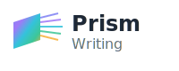
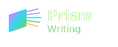

Prism Writing Logo Collection
Light Mode Versions

Full Logo (logo.svg)
Icon Only (logo-icon.svg)
Favicon (favicon.svg)
Dark Mode Version

Full Logo Dark (logo-dark.svg)
Design Philosophy (Inspired by Rob Janoff)
Simplicity:
Clean, geometric shapes that are instantly recognizable
Symbolic Meaning:
The prism represents transformation - complex information becomes clear, accessible content
Color Story:
Rainbow spectrum emerging from the prism symbolizes the diverse range of technical writing services
Memorable:
Simple enough to work at any size, from business cards to billboards
Versatile:
Multiple versions for different contexts (full logo, icon, favicon)
Professional:
Modern gradient and typography that conveys expertise and innovation
Meaningful:
The light rays represent clarity, understanding, and illumination - core values of technical writing